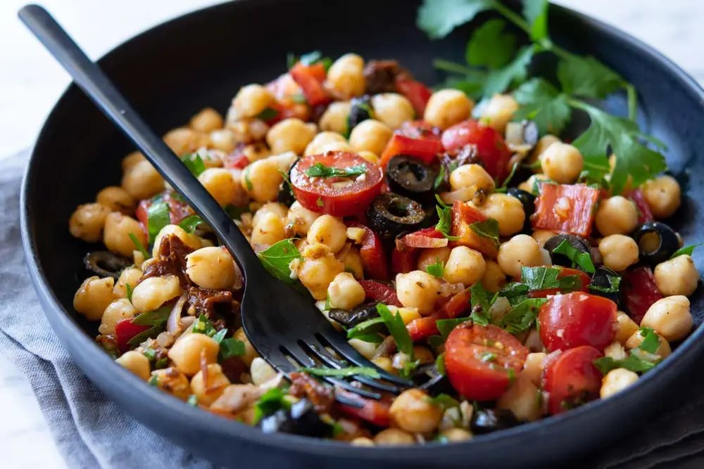

Garbanzas de la abuela
Raciones para personas
Remojar toda la noche las garbanzas. Hervir a fuego lento durante 3 horas. Cortar los tomates y las aceitunas. Mezclar todos los ingredientes
gr garbanzos
gr tomate
gr aceite
gr aceitunas